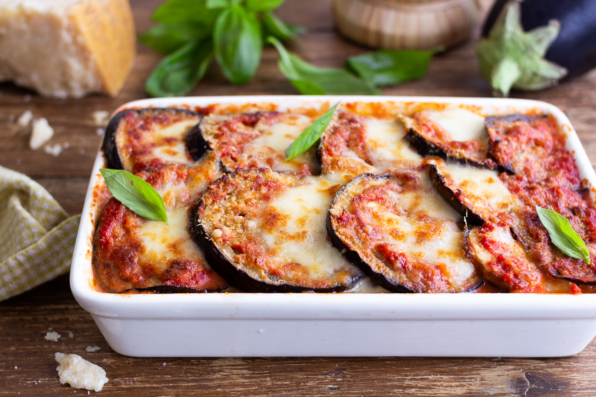

Parmigiana

Description
Parmigiana is a staple in any Italian household, although the origins are heavily debated with a lot of Northern and Southern Italians alike
claiming ownership of this delicious dish!
With this step-by-step recipe which combines eggs, aubergines, and mozzarella, you'll be able to make this at home with no problem.
You can use any sort of cheese for the parmigiana but mozzarella definitely works best for the cheese-pull!
Ingredients
Serves 4 people
- Aubergines - 850g
- Mozzarella - 250g
- Eggs (boiled and cut into small pieces) - 2
- Brown onion - 1/2 of a large onion
- Tomato passata - 500g
- Parmigiano Reggiano (grated) - 75g
- Basil - a handful of leaves
- Salt and pepper to season
- Olive oil
Method
- To prepare the eggplant parmigiana, start with the sauce. Clean and chop the onion, pour it into a pan with (heated) oil. Let it brown for a couple of minutes, stirring often to prevent it from burning, then add the passata
- Season with salt and add the basil leaves, rinse the container with a little water and pour it into the pan then leave to cook on a low heat for 45-50 minutes.
- Cut the mozzarella and boiled eggs into cubes.
- Wash and trim the aubergines, then slice lengthwise to obtain 4-5 mm thick slices. Dry them well with absorbent paper.
- When you have finished, fry the aubergines in oil already hot at 170°, immersing a few pieces at a time
- As soon as they are lightly golden, drain them on a tray with absorbent paper. When the tray runs out of space, place more absorbent paper on top, and place the other fried aubergines on top.
- Finally, move on to the composition: start by pouring a little sauce into a 20x30 cm baking dish. Form the first layer by arranging the aubergine slices, then cover with the tomato sauce.
- Spread out some mozzarella and egg cubes, sprinkle with grated Parmesan cheese and flavour with basil leaves.
- Start again by adding the tomato sauce and the aubergines, then the cheese, egg and the basil leaves. Continue like this until you reach the last layer of aubergines.
- Complete with the remaining diced mozzarella and grated Parmigiano Reggiano. Cook in the oven, already heated to 200°, for about 30 minutes.
- After the cooking time, leave to rest for 15-20 minutes before serving your aubergine parmigiana.